Optical design · Zemax OpticStudio 2025 R1
Optical system design
Laser-to-fibre coupling and three classic imaging systems, designed and analysed in Zemax OpticStudio. The imaging systems are evaluated at the visible F, d and C lines (0.486, 0.588 and 0.656 µm). Every number below is taken from the OpticStudio analyses and reports linked under each design.
Laser-to-fibre coupling: single-mode vs multimode
A collimated 632.8 nm Gaussian beam (waist radius 1.15 mm) focused by one stock lens, a Thorlabs C220TMD-A moulded asphere (f = 11.00 mm), into a single-mode fibre (MFD 4.0 µm) and into 50 µm and 105 µm core multimode fibres (NA 0.22). The focused spot (1.96 µm radius) is matched to the single-mode fibre mode. Coupling was computed with OpticStudio's Huygens fibre-coupling analysis and Physical Optics Propagation, and an alignment sweep (decenter, focus, tilt; 567 POP runs) was scripted in Python through the ZOS-API.

| SMF coupling efficiency | 98.8% (−0.05 dB); 3 methods agree within ~0.1% |
|---|---|
| Focused spot / fibre mode | 1.956 µm / 2.0 µm radius (99.95% overlap) |
| SMF lateral offset, −1 dB | ±0.94 µm |
| SMF focus offset, −1 dB | +19 / −20 µm |
| SMF fibre tilt, −1 dB | 2.8° |
| MMF coupling (bare end face) | 95.4% (50 and 105 µm core) |
| MMF lateral offset, −1 dB | ±24 µm (50 µm) · ±52 µm (105 µm) |
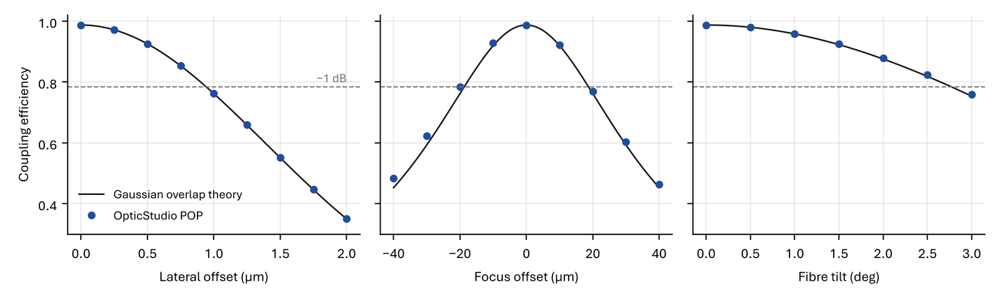
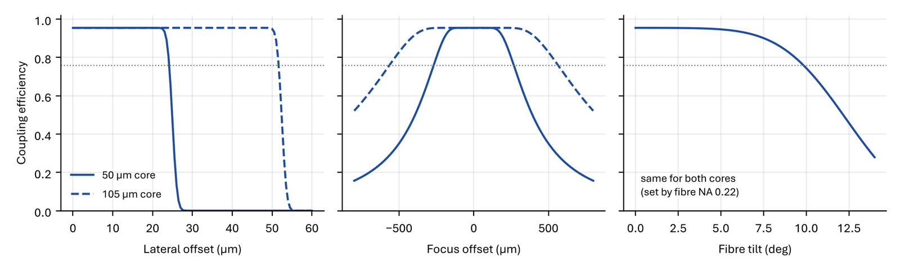
Peak efficiency is the same for all three fibres; the multimode cores relax the lateral tolerance by about 26× and 55×, at the cost of a multimode output.
Achromatic doublet
A two-element achromat, which pairs a crown and a flint glass to bring two wavelengths to a common focus. Analysed on axis and at 1° field.
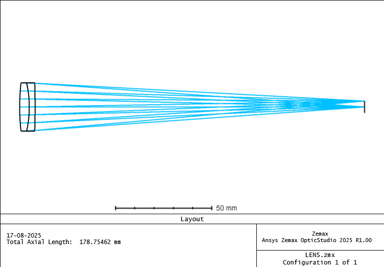
| Wavelengths | 0.486 / 0.588 / 0.656 µm |
|---|---|
| Field angles | 0°, 1° |
| Image height at 1° | 3.055 mm |
| RMS spot radius | 2.542 µm (0°) · 2.652 µm (1°) |
| GEO spot radius | 6.176 µm (0°) · 4.741 µm (1°) |
| Max. chromatic focal shift | 87.06 µm |
| Diffraction-limited range | 115.22 µm |
| Total axial length | 178.75 mm |
The chromatic focal shift across 0.486–0.656 µm (87.06 µm) stays inside the diffraction-limited range (115.22 µm).
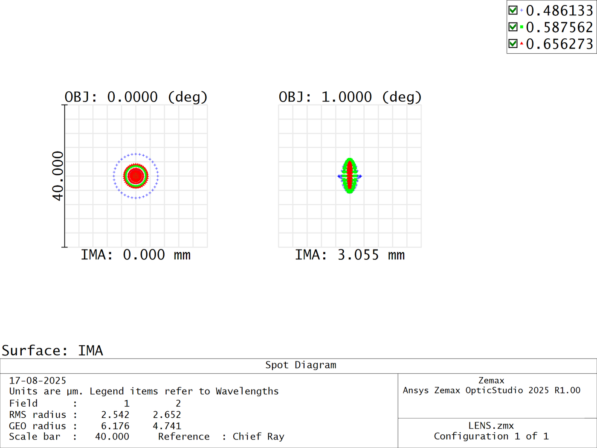
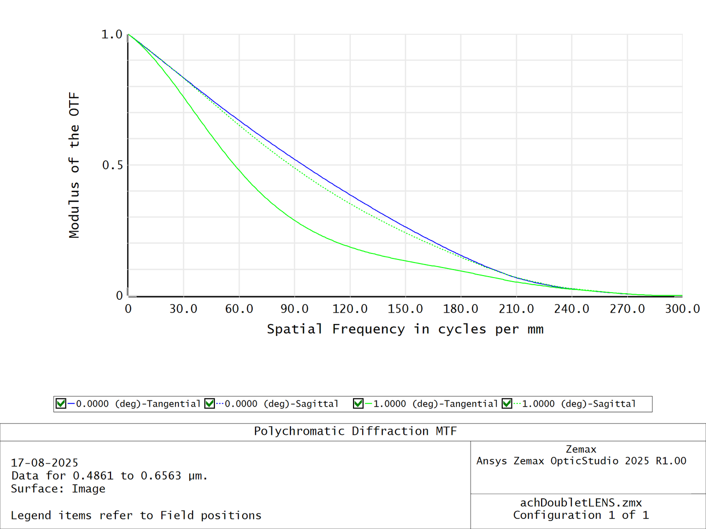
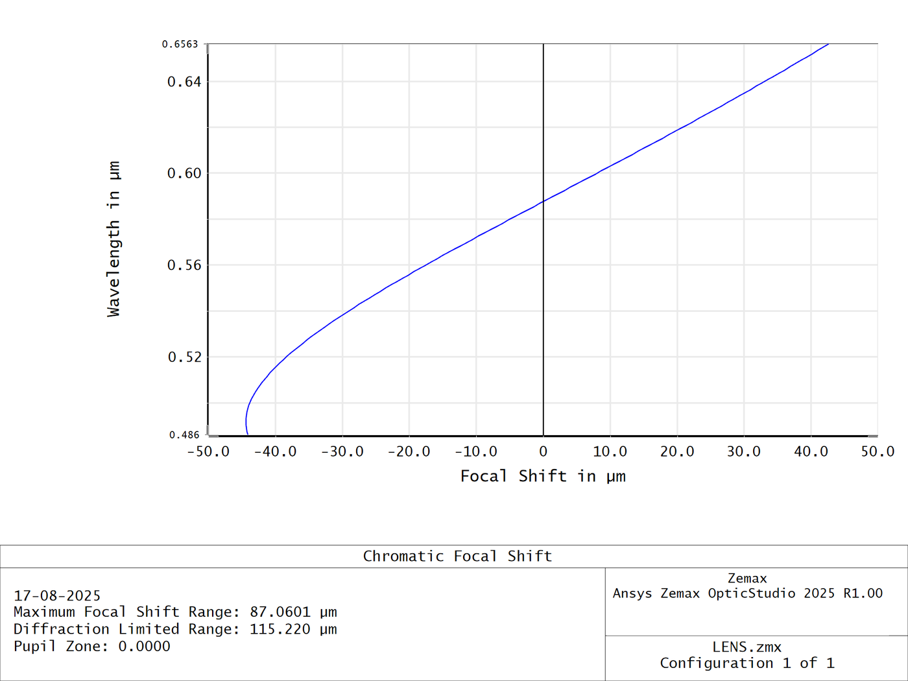
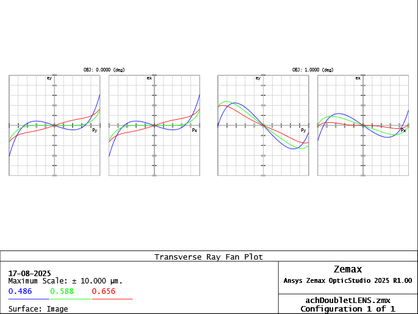
Wollaston landscape lens
An early photographic lens: a single meniscus element with an aperture stop, giving a wide field of view with better off-axis sharpness than a simple lens. Analysed at four field angles up to 22.5°.
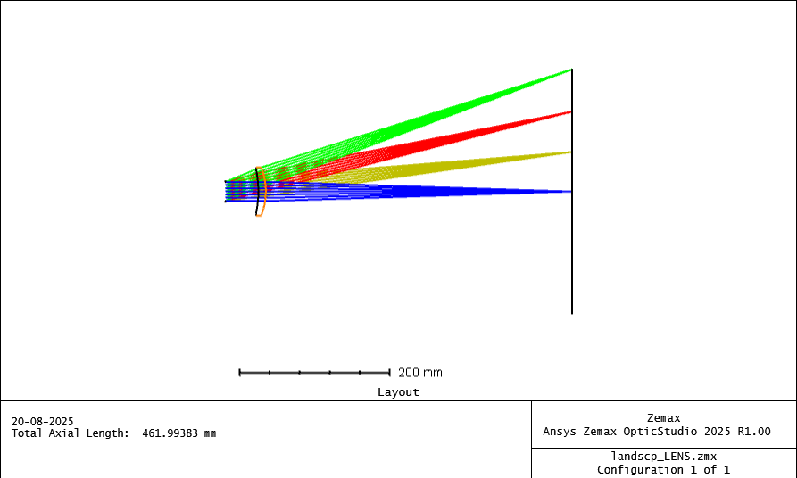
| Wavelengths | 0.486 / 0.588 / 0.656 µm |
|---|---|
| Field angles | 0°, 7.5°, 15°, 22.5° |
| Image height | 0 / 52.513 / 106.220 / 162.425 mm |
| RMS spot radius | 95.945 / 110.975 / 170.054 / 285.801 µm |
| GEO spot radius | 156.484 / 232.104 / 348.661 / 593.911 µm |
| Total axial length | 461.99 mm |
Values are listed in field order 0°, 7.5°, 15°, 22.5°.
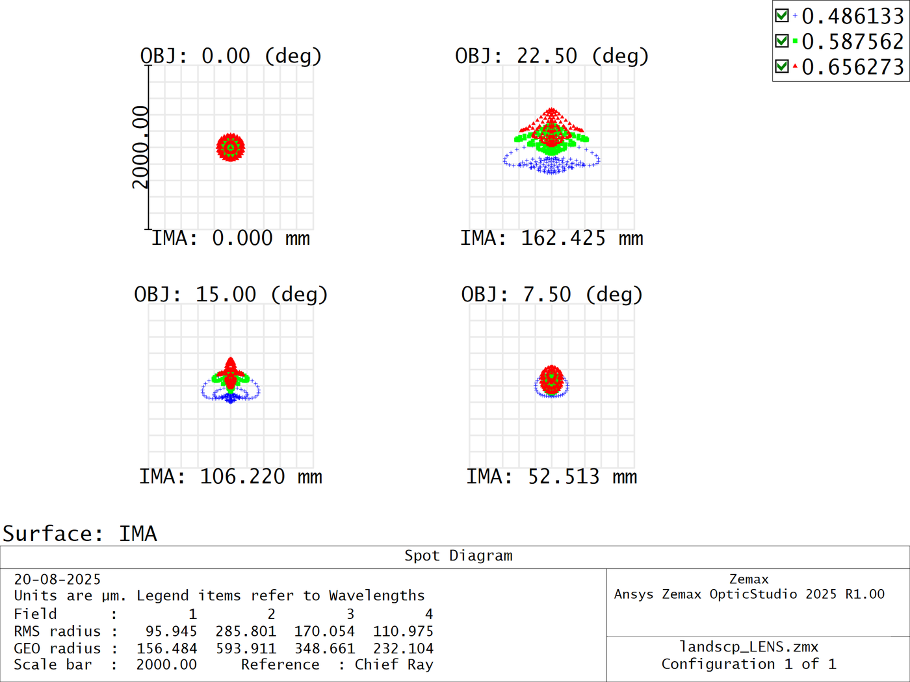
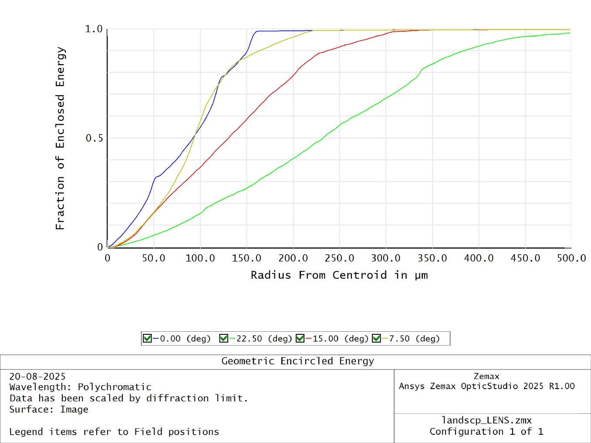
Modified Ritchey–Chrétien telescope
A reflecting telescope with hyperbolic primary and secondary mirrors, which cancel spherical aberration and coma, plus a refractive element near the focal plane. The spots stay well inside the Airy disc across the field.
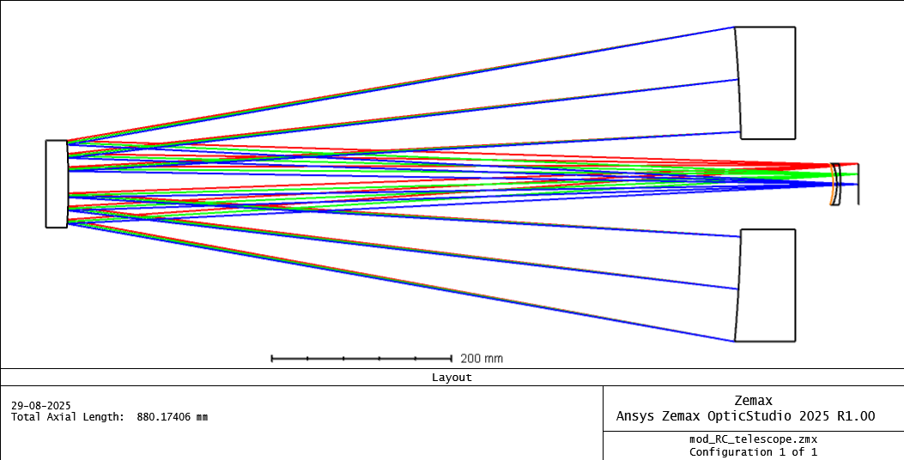
| Wavelengths | 0.486 / 0.588 / 0.656 µm |
|---|---|
| Field angles | 0°, 0.175°, 0.35° |
| Image height | 0 / 11.489 / 23.067 mm |
| RMS spot radius | 0.629 / 0.752 / 0.587 µm |
| GEO spot radius | 0.981 / 1.902 / 1.101 µm |
| Airy radius | 7.693 µm |
| Total axial length | 880.17 mm |
Values are listed in field order 0°, 0.175°, 0.35°. The largest RMS spot (0.752 µm) is about a tenth of the Airy radius, so the design is diffraction-limited over the full field.
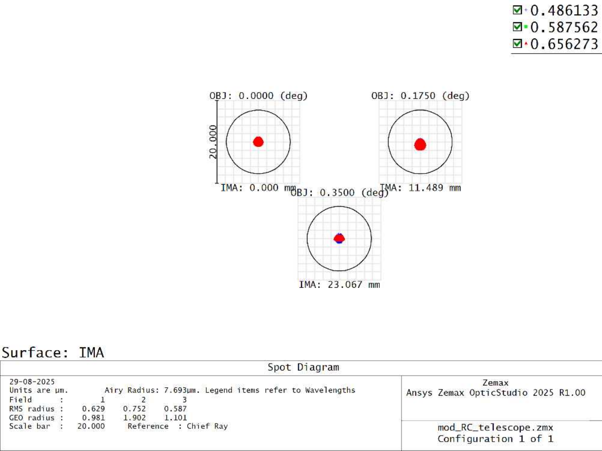
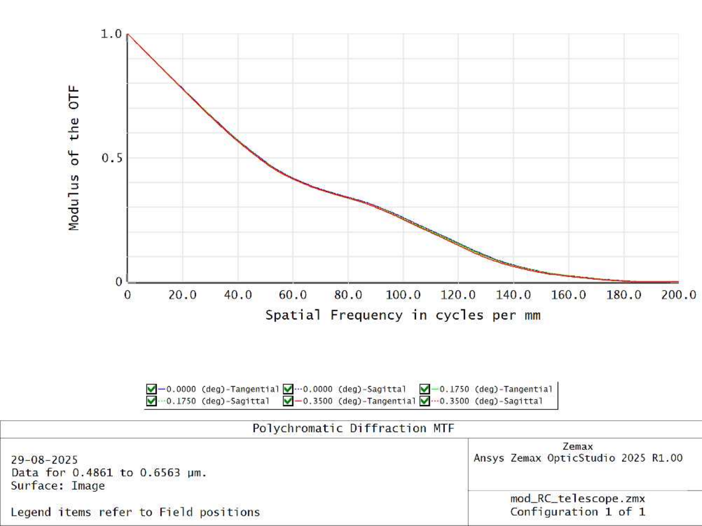